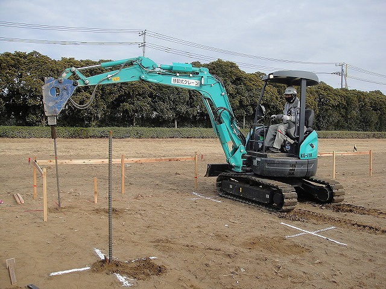
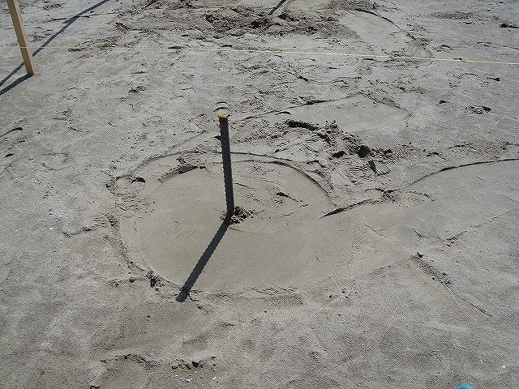
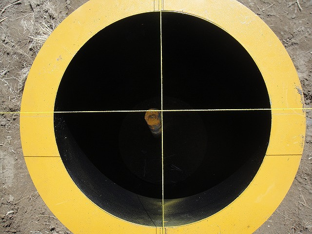
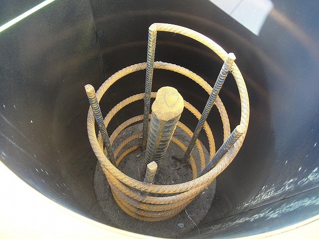
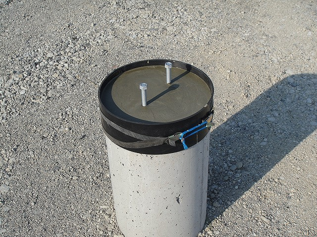
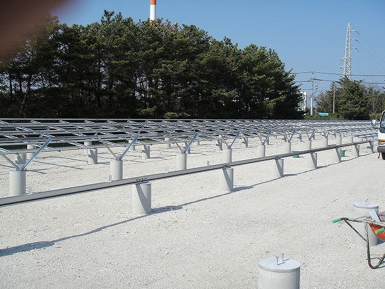

Ｉｒｏｎ－Ｗｉｎｇ 基礎施工状況
鉄筋打込
Ｉｒｏｎ－Ｗｉｎｇ まず、鉄筋を打込ミニパワーショベルで打ち込みます。
鉄筋打込完了
Ｉｒｏｎ－Ｗｉｎｇ 鉄筋打込をおわり、鉄筋周辺を転圧します・
型枠セット
Ｉｒｏｎ－Ｗｉｎｇ 型枠を正確にセット
スパイラル筋据え付け
Ｉｒｏｎ－Ｗｉｎｇ 補強のスパイラル筋を据え付けます
コンクリート打込完了・調整モルタル完了
Ｉｒｏｎ－Ｗｉｎｇ ゴムベルトによるモルタル型枠 上手い ！
架台組み立て
Ｉｒｏｎ－Ｗｉｎｇ 太陽光パネル架台組み立て完了